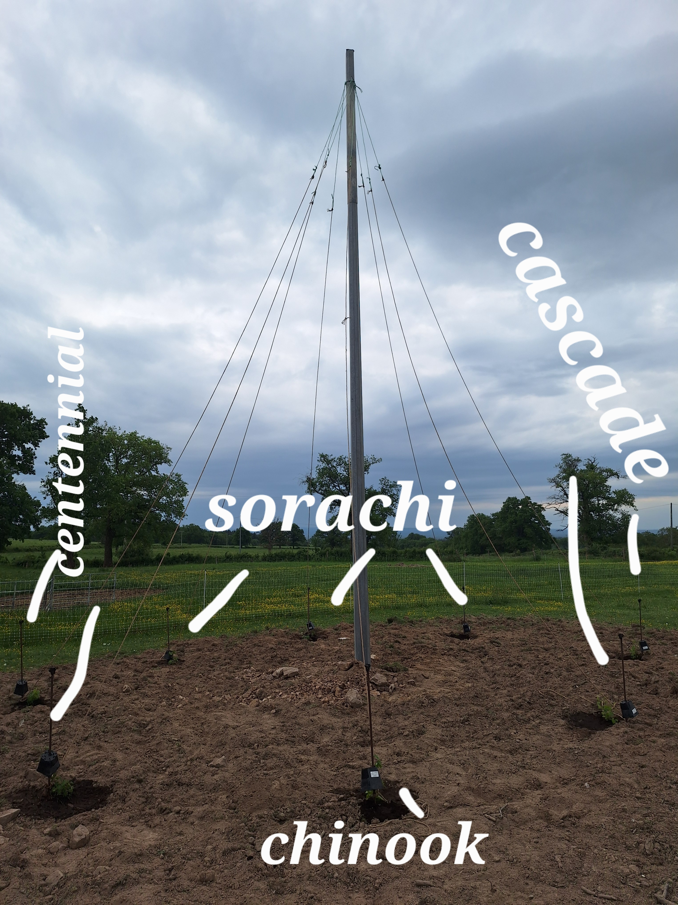
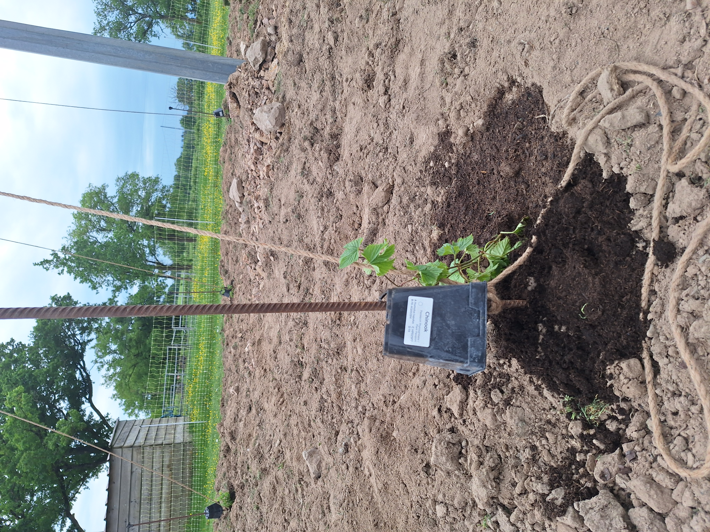
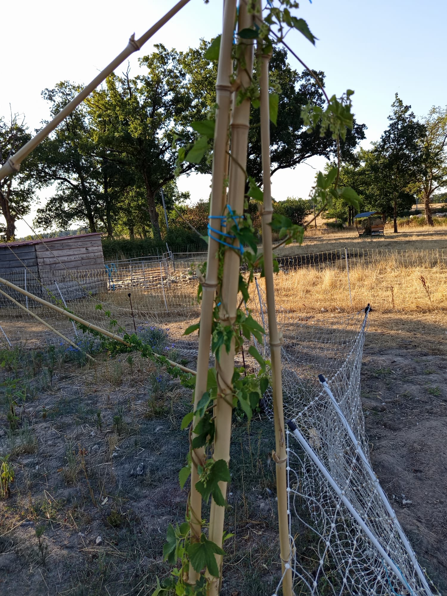
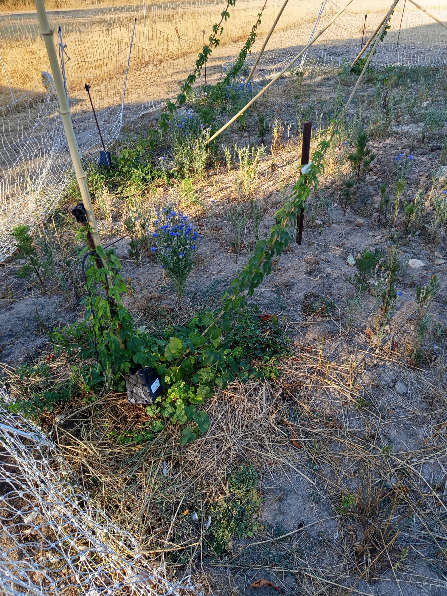
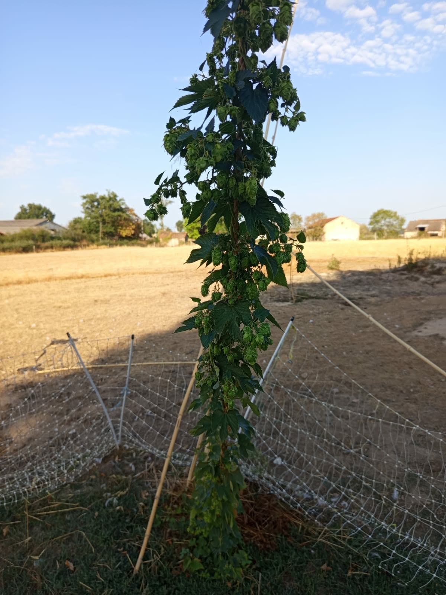
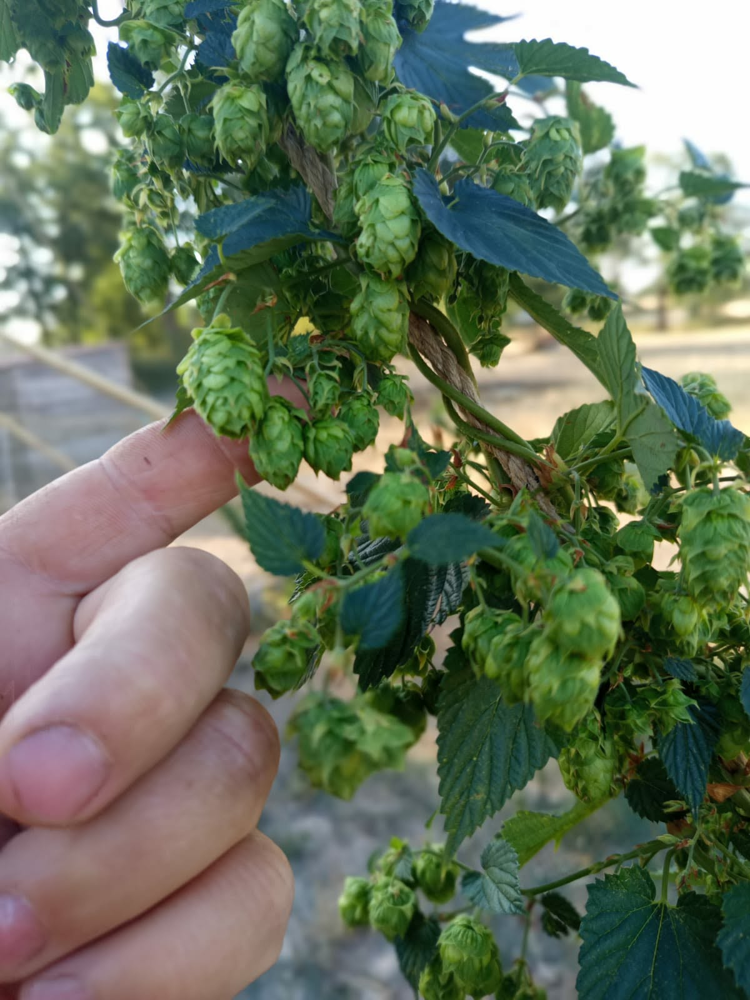
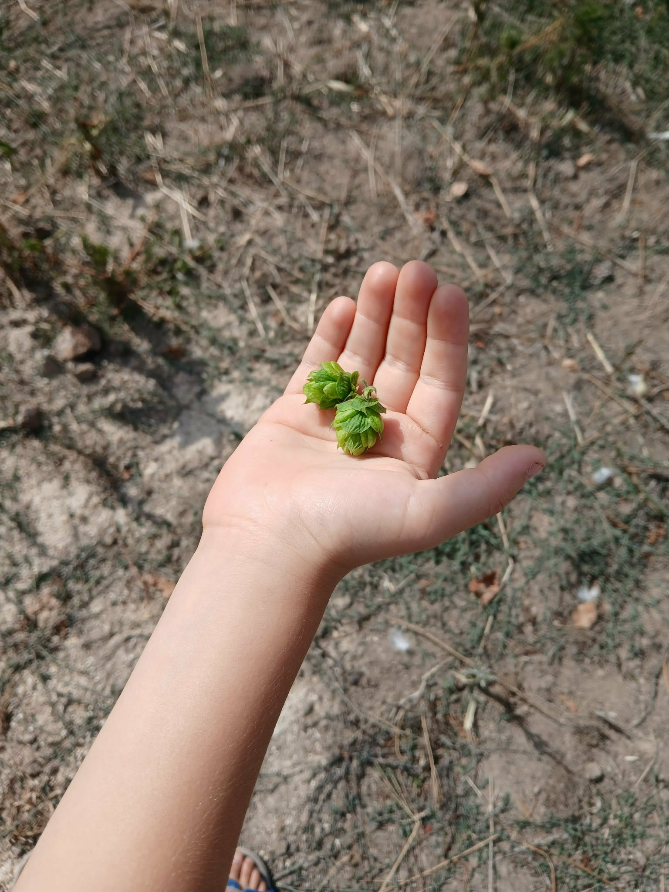
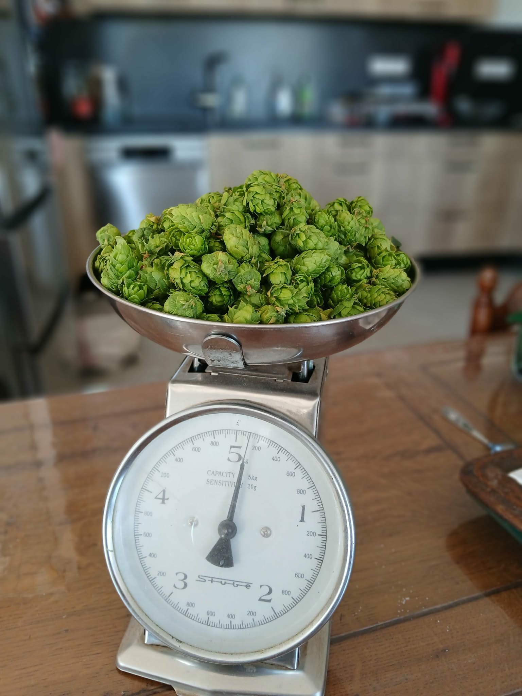
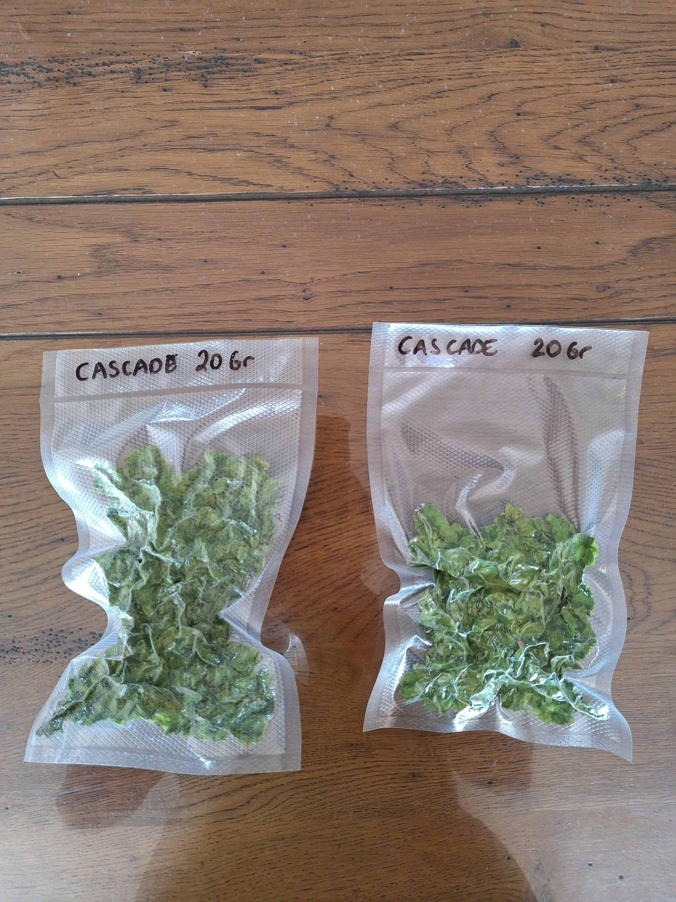

Une partie des houblons utilisés dans nos brassins est cultivée directement à la ferme. De la plantation jusqu'à la récolte, nous suivons chaque étape afin de produire des bières toujours plus locales.








